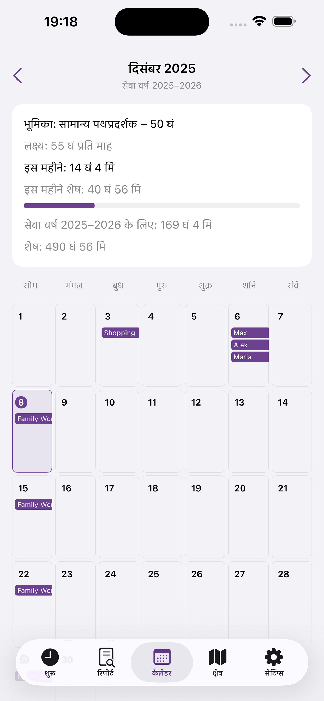
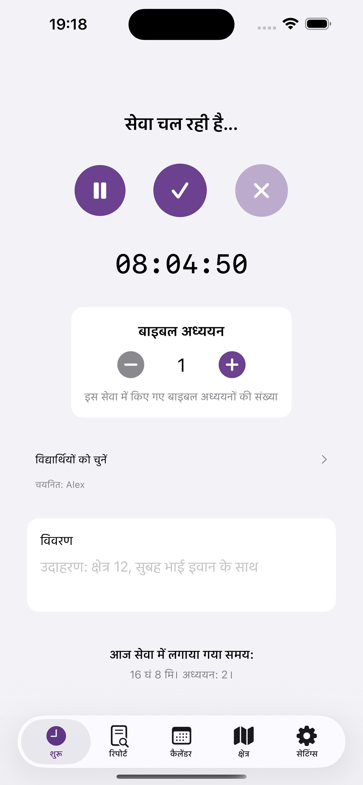
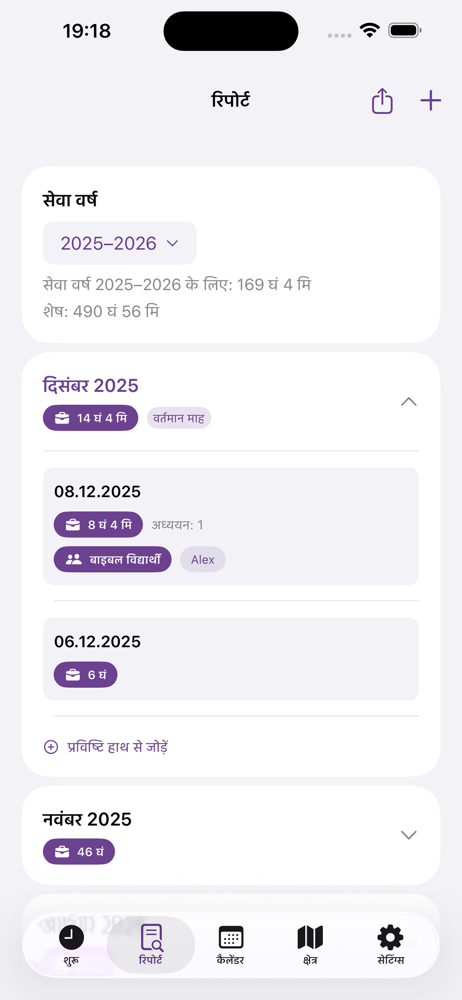
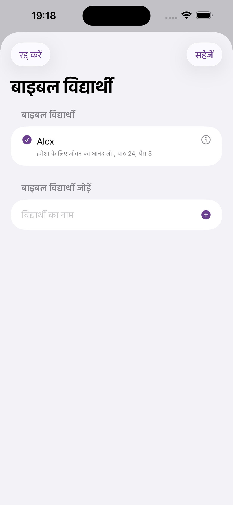
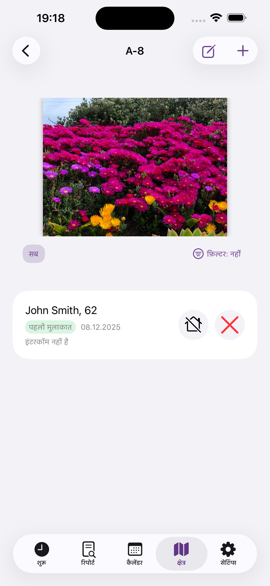
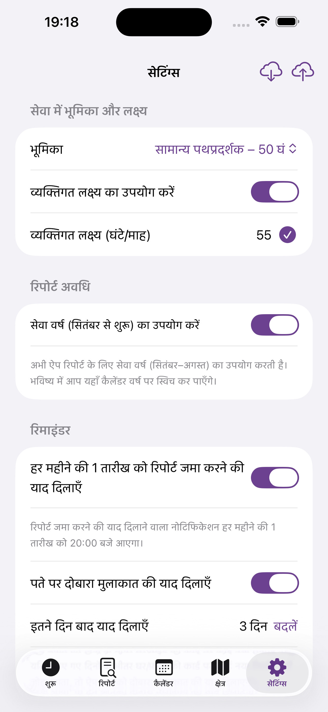
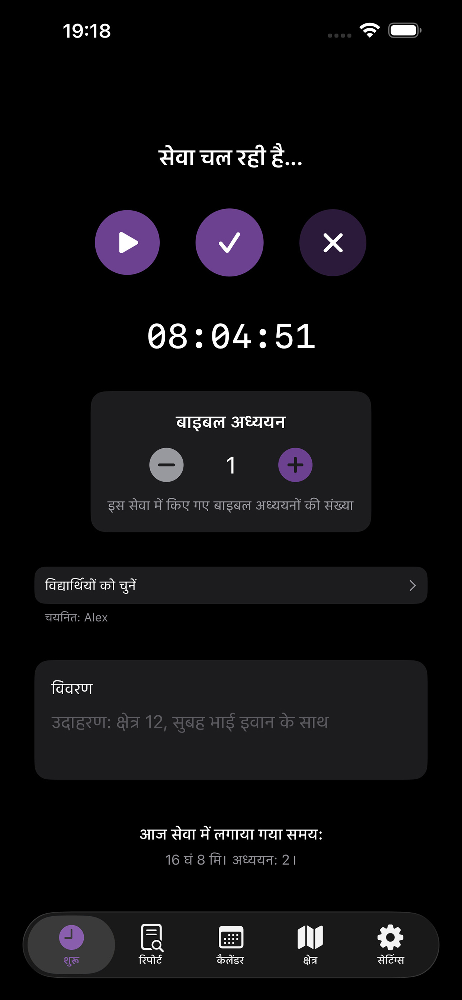
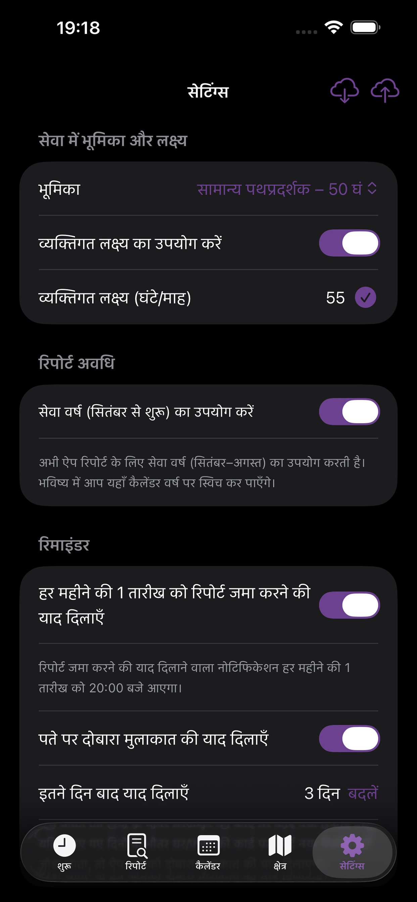

प्रचार सेवा और पायनियर सेवा के लिए आपका संपूर्ण साथी
JW Ministry यहोवा के साक्षियों की क्षेत्र सेवा के लिए बनाया गया iPhone और iPad ऐप है: लाइव टाइमर, बाइबल विद्यार्थियों की प्रगति, सेवा वर्ष की रिपोर्ट, पायनियर घंटों का लक्ष्य और घर-घर के इलाके का रिकॉर्ड।



JW Ministry की हर स्क्रीन देखें
हिन्दी इंटरफ़ेस के असली स्क्रीनशॉट — सेवा टाइमर और बाइबल विद्यार्थियों से लेकर पायनियर कैलेंडर, इलाके के कार्ड और OLED डार्क मोड तक।







सुव्यवस्थित प्रचार सेवा के लिए आवश्यक सभी सुविधाएँ
प्रचारकों, सहयोगी पायनियरों, नियमित पायनियरों और विशेष पायनियरों के लिए बनाया गया।
स्मार्ट टाइमर, विजेट और Dynamic Island
ऐप, होम स्क्रीन विजेट या लॉक स्क्रीन से टाइमर शुरू करें। फ़ोन लॉक होने पर भी टाइमर Dynamic Island में दिखता रहता है।
बाइबल अध्ययन और प्रकाशन प्रगति
बाइबल अध्ययनों को सीधे दैनिक रिपोर्ट से जोड़ें। हर विद्यार्थी के लिए 'हमेशा के लिए ज़िंदगी का आनंद लीजिए!' में वर्तमान पाठ दर्ज करें।
सभी पायनियर भूमिकाएँ और व्यक्तिगत लक्ष्य
प्रचारक, सहयोगी पायनियर (15 या 30 घंटे), नियमित पायनियर (50 घंटे), विशेष पायनियर (90 / 100 घंटे) और कस्टम मासिक लक्ष्य का समर्थन करता है।
सेवा वर्ष (सितंबर–अगस्त) और कैलेंडर
प्रचार सभाओं और पारिवारिक उपासना की योजना बनाएँ। नियोजित और वास्तविक घंटों की तुलना करें और स्वाइप करके योजना को रिपोर्ट में बदलें।
इलाके के कार्ड, अपार्टमेंट जनरेटर और पुनःभेंट रिमाइंडर
नक्शे की फ़ोटो और 10 रंगों के साथ इलाके के कार्ड बनाएँ, मंज़िल के अनुसार फ़्लैट नंबर जनरेट करें और नाम या पते से खोजें।
100% डिवाइस-स्तरीय गोपनीयता और iCloud बैकअप
कोई पंजीकरण नहीं और कोई बाहरी सर्वर नहीं। आपका सारा डेटा केवल आपके iPhone/iPad में सुरक्षित रहता है।
वर्ज़न 1.8 में नया क्या है
- कैलेंडर में महीने के नियोजित घंटों का ऑटोमैटिक जोड़ और 'योजना बनाम वास्तविक' डबल प्रोग्रेस बार।
- कैलेंडर की नियोजित सेवा को एक स्वाइप से सीधे मासिक रिपोर्ट में बदलें।
- सभी इलाकों में पते या नाम से तुरंत खोज और इलाके के कार्ड के लिए 10 रंग।
- रिपोर्ट टैब में आगामी सेवा वर्ष (2026–2027) का समर्थन।
- नवीनतम iOS और iPadOS के लिए पूर्ण अनुकूलन और मज़बूत बैकअप सुरक्षा।
प्रचारक और पायनियर JW Ministry क्यों चुनते हैं
प्रचार रिपोर्ट, पायनियर शेड्यूल और इलाके के रिकॉर्ड की तुलना।
| सुविधा | कागज़ की डायरी | पुराने ऐप्स | JW Ministry 1.8 |
|---|---|---|---|
| लॉक स्क्रीन और Dynamic Island पर लाइव टाइमर | नहीं | नहीं | हाँ (Live Activities) |
| पायनियर लक्ष्य (15, 30, 50 घं.) और सेवा वर्ष (600 घं.) की गणना | हाथ से गणना | आंशिक | ऑटोमैटिक + व्यक्तिगत लक्ष्य |
| कैलेंडर में योजना बनाम वास्तविक तुलना और रिपोर्ट में स्वाइप | नहीं | नहीं | एक स्वाइप में |
| अपार्टमेंट बिल्डिंग जनरेटर + इलाके की फ़ोटो और 10 रंग | कागज़ की पर्चियाँ | केवल टेक्स्ट | फ़ोटो कार्ड + तेज़ खोज |
| पुनःभेंट रिमाइंडर और हर महीने की 1 तारीख को रिपोर्ट अलर्ट | नहीं | सामान्य | स्मार्ट iOS सूचनाएँ |
| 100% ऑफ़लाइन गोपनीयता और फ़ोटो सहित iCloud Drive बैकअप | खोने का डर | नए फ़ोन में डेटा हानि | 100% ऑफ़लाइन और सुरक्षित |
| नए iOS, iPad, OLED डार्क मोड और 35+ भाषाओं का समर्थन | — | अपडेट बंद | नेटिव SwiftUI डिज़ाइन |
यहोवा के साक्षियों की क्षेत्र सेवा और पायनियर सेवा के लिए निर्मित
पूरे सेवा वर्ष के दौरान JW Ministry प्रचारकों और पायनियरों की कैसे मदद करता है।
नियमित और विशेष पायनियर (50, 90 और 100 घंटे / 600 घंटे का सेवा वर्ष)
सितंबर से अगस्त के सेवा वर्ष में 50 घंटे के मासिक लक्ष्य और 600 घंटे के वार्षिक लक्ष्य को आसानी से ट्रैक करें। व्यक्तिगत लक्ष्य (जैसे 55 घंटे) सेट करें और कैलेंडर में नियोजित व वास्तविक समय की तुलना करें।
- मासिक 50 घंटे और सेवा वर्ष के 600 घंटों का ऑटोमैटिक हिसाब
- कस्टम मासिक घंटा लक्ष्य (उदा. 55 घंटे)
- नियोजित बनाम रिपोर्ट किए गए घंटों की डबल प्रोग्रेस बार
सहयोगी पायनियर (15 और 30 घंटे) और मंडली के प्रचारक
विशेष अभियान या स्मारक के मौसम में एक टैप में सहयोगी पायनियर (15 या 30 घंटे) चुनें। हर महीने की 1 तारीख रात 8:00 बजे का रिमाइंडर आपको समय पर रिपोर्ट देने में मदद करता है।
- 15 या 30 घंटे के सहयोगी पायनियर लक्ष्य पर तुरंत स्विच करें
- एक टैप में मासिक प्रचार रिपोर्ट साझा करें
- हर महीने की 1 तारीख को रात 8:00 बजे ऑटोमैटिक रिमाइंडर
घर-घर के इलाके, अपार्टमेंट और पुनःभेंट
नक्शे की फ़ोटो, 10 रंगों और फ़्लैट जनरेटर के साथ डिजिटल इलाके के कार्ड बनाएँ। 'घर पर नहीं' नोट करें और नाम या पते से तुरंत खोजें।
- प्रवेश द्वार और मंज़िल के अनुसार अपार्टमेंट फ़्लैट जनरेटर
- इलाके के नक्शे की फ़ोटो, 10 रंग और नाम/पते से खोज
- तय दिनों के बाद पुनःभेंट के लिए ऑटोमैटिक रिमाइंडर
बाइबल अध्ययन प्रगति और पुराने ऐप्स का आधुनिक विकल्प
हर विद्यार्थी के लिए 'हमेशा के लिए ज़िंदगी का आनंद लीजिए!' किताब का पाठ और भाग सहेजें। iPhone और iPad के लिए आधुनिक नेटिव ऐप।
- 'हमेशा के लिए ज़िंदगी का आनंद लीजिए!' पाठ और भाग ट्रैकिंग
- विजेट, Dynamic Island और OLED डार्क मोड
- ServicePlanner और MyTime का आधुनिक विकल्प
प्रचारकों और पायनियरों की राय
भाई-बहनों के अनुभव जो रोज़ाना प्रचार में JW Ministry का उपयोग करते हैं।
“कैलेंडर में नियोजित घंटों का जोड़ और वास्तविक समय की तुलना देखने से मेरा 50 घंटों का शेड्यूल बनाए रखना बहुत आसान हो गया है।”
“लॉक स्क्रीन टाइमर और कैलेंडर की योजना को स्वाइप करके सीधे रिपोर्ट में भेजना बहुत ही सुविधाजनक है। बिल्कुल मुफ़्त और विज्ञापन-मुक्त।”
“अपार्टमेंट जनरेटर और इलाकों में नाम से खोजने की सुविधा ने मेरी सारी कागज़ की पर्चियों की जगह ले ली है।”
35+ भाषाओं में पूर्ण अनुवाद
ऐप, विजेट और सूचनाएँ आपके iPhone या iPad की भाषा के अनुसार अपने आप काम करती हैं:
JW Ministry के विकास में सहयोग करें
JW Ministry पूरी तरह मुफ़्त है, इसमें कोई विज्ञापन या सब्सक्रिप्शन नहीं है। यदि यह ऐप आपकी सेवा में मददगार है, तो आप भविष्य के iOS अपडेट्स और वार्षिक Apple Developer लाइसेंस के लिए सहयोग कर सकते हैं:
कार्ड द्वारा सहयोग (विश्वभर में)
Boosty या Patreon के माध्यम से सहयोग करें:
सीधा क्रिप्टो ट्रांसफर (0% शुल्क)
सीधे डेवलपर के वॉलेट में भेजें:
TQQxYhThQGngj887Lvq9TnKtyyYMcUDFNw
UQBNBroTUyMG0YqgiHGXwVKO_rKe5d2y7gXqvICREjBwuKYk
अक्सर पूछे जाने वाले प्रश्न (FAQ)
JW Ministry ऐप JW Library के साथ कैसे काम करता है?
जहाँ JW Library बाइबल, प्रकाशन पढ़ने और सभाओं के लिए है, वहीं JW Ministry आपकी व्यक्तिगत प्रचार सेवा का हिसाब रखने के लिए है: घंटों का टाइमर, पायनियर शेड्यूल (15, 30, 50 घंटे), इलाके के नोट्स और बाइबल अध्ययन।
मेरी रिपोर्ट और इलाके के नोट्स कहाँ सेव होते हैं?
केवल आपके अपने iPhone या iPad की मेमोरी में। कोई भी डेटा किसी बाहरी सर्वर पर नहीं भेजा जाता।
नए iPhone में अपना डेटा कैसे ट्रांसफ़र करें?
सेटिंग्स टैब में ऊपर दाईं ओर क्लाउड आइकन पर टैप करके iCloud Drive में पूरा बैकअप सेव करें और नए फ़ोन में एक टैप से रीस्टोर करें।
क्या प्रचार में इंटरनेट के बिना भी ऐप काम करता है?
हाँ, यह बिना मोबाइल डेटा या Wi-Fi के 100% ऑफ़लाइन काम करता है।